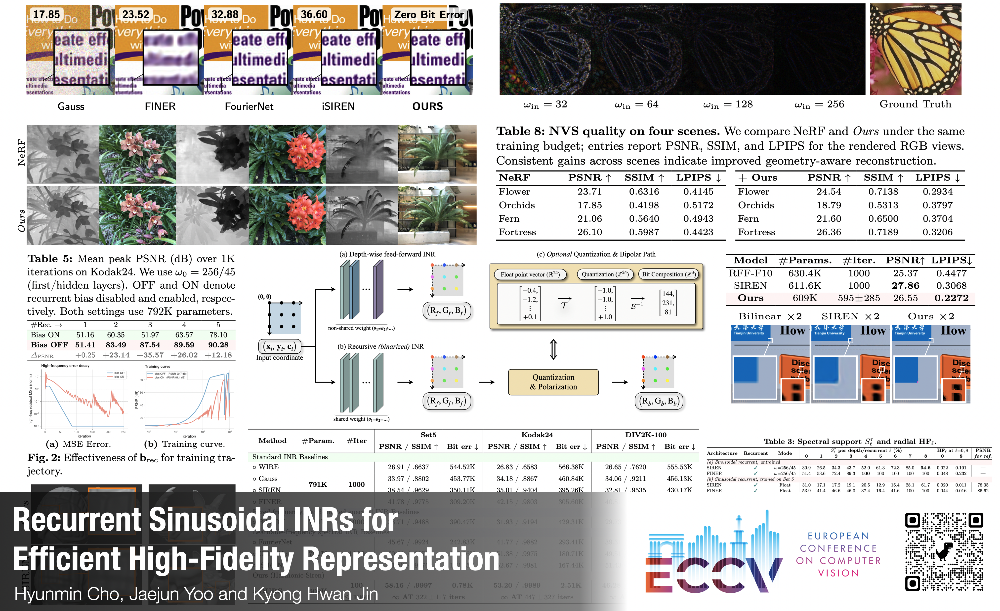
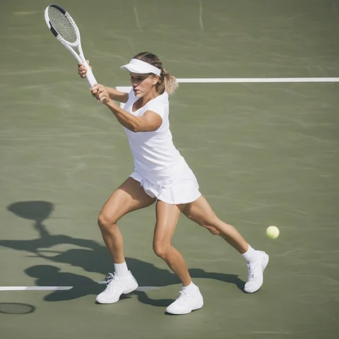
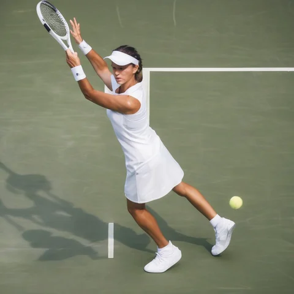
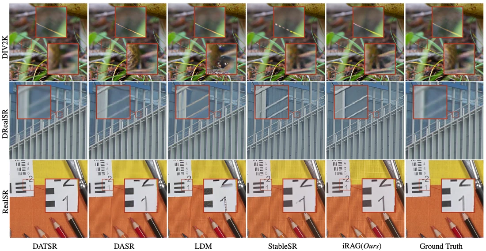
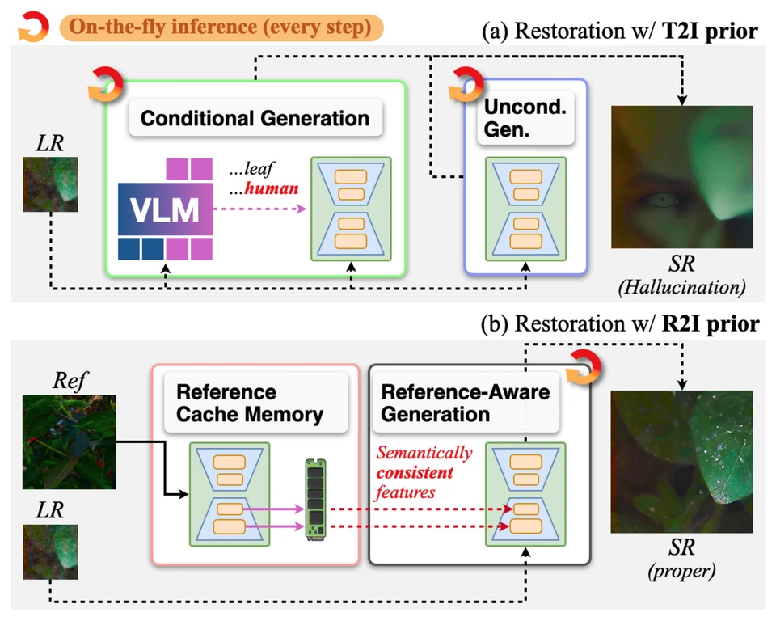
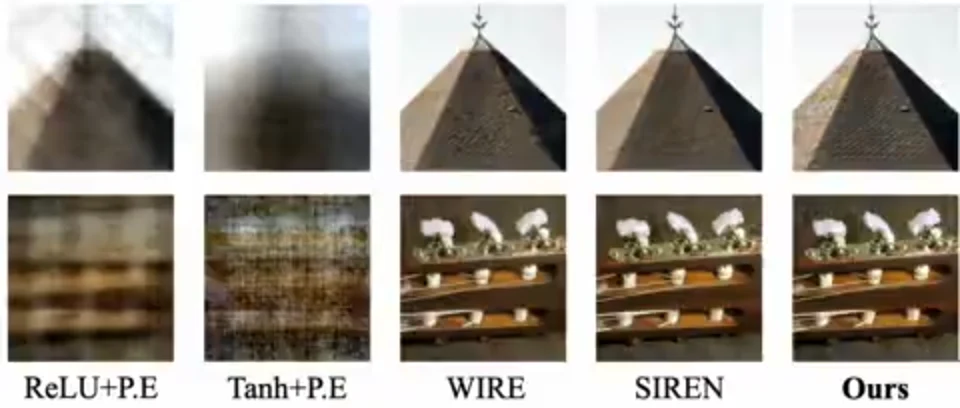

Recurrent Sinusoidal INRs for Efficient High-Fidelity Representation: Harmonic-line Spectrum Perspective
Expanding a neural representation’s frequency range by reusing one sinusoidal block—without adding parameters.
1st-year Ph.D. student Korea University
I explore visual intelligence, with a current focus on representation and generation.
I’m in the Integrated M.S.–Ph.D. program at Korea University, working in the Image Processing Algorithm Lab, advised by Kyong Hwan Jin. My current work spans generative models, controllable generation, and neural representations.

Publications

Expanding a neural representation’s frequency range by reusing one sinusoidal block—without adding parameters.
Decomposing attention into symmetric energy and skew-symmetric circulation to control image fidelity and diversity.


Amplifying tangential sampler updates to reduce hallucinations, without retraining or extra denoiser evaluations.
Gold Prize · IPIU 2026

Retrieving visual references to guide diffusion toward realistic, detail-preserving super-resolution.
With Samsung Research

Recovering image structure and texture with reference features cached and reused throughout denoising.

Reconstructing digital signals exactly by learning their individual bit planes.
* Equal contribution † Corresponding author
Upcoming
–
A few updates
Two papers at ECCV: recurrent sinusoidal representations and reference-aware super-resolution.
Two papers at ICML: Tangential Amplifying Guidance and attention decomposition for diffusion.
Gold Prize at the 38th Workshop of Image Processing and Image Understanding (IPIU). Certificate
Mar 2024–present
Integrated M.S. & Ph.D. in Electrical Engineering
Generative models, world models, and Hopfield networks.
Advisor: Kyong Hwan Jin
Mar 2020–Feb 2024
B.S. in Software
Image super-resolution.
Advisor: Kiho Choi (now at Kyung Hee University)
Jan–Dec 2026
Next Generation Display Lab
Uncertainty-Aware Temporal Relation Reasoning under Missing Video Evidence
Jun 2024–May 2025
Next Generation Display Lab
Development of user-preferred image-based image quality technology
Hyunmin Cho, Kyong Hwan Jin, Yongjun Lee, Jiwon Kim, Woo Kyoung Han
Korea Patent Application No. 10-2025-0150878